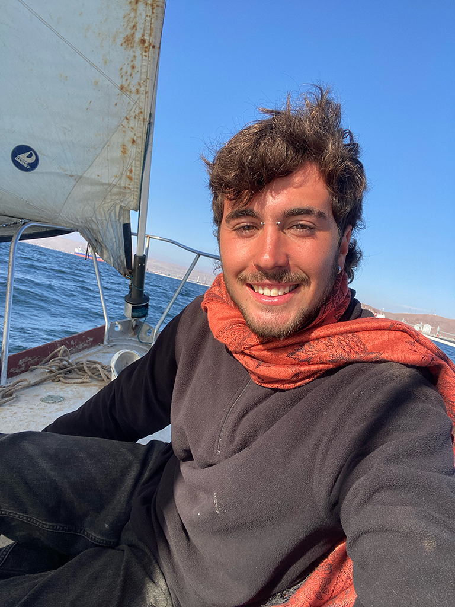

Fotógrafo y profesional del sonido. Licenciado en Comunicación Audiovisual por la Universidad Miguel Hernández (UMH), ha desarrollado su carrera principalmente en el ámbito de la fotografía de autor y el diseño sonoro para cine. Se ha formado como fotógrafo en la academia de fotografía mistos, en la que realizó estudios en fotografía avanzada y fotografía de autor. Su proyecto fotográfico de autor El cuerpo necesita un ratito de sol fue expuesto en el Festival Internacional PhotoAlicante 2024, recibiendo reconocimiento por su mirada íntima y poética. Y su proyecto “El kaleuche” ha sido expuesto en Cámara lúcida, Valparaíso, Chile. En el campo del sonido, se encargó del diseño y mezcla en el cortometraje de ficción El Reparto, ganador del Festival de Cine Universitario Zoom In 2024 y nominado en el Festival Internacional de Cine de Alicante 2025. Recientemente acreditado como profesional de mastering de música by Escac. Además, es piloto profesional de drones acreditado por la Escac y Aerocámaras. Actualmente continúa desarrollando nuevos proyectos fotográficos y audiovisuales de carácter documental en Latinoamérica.
